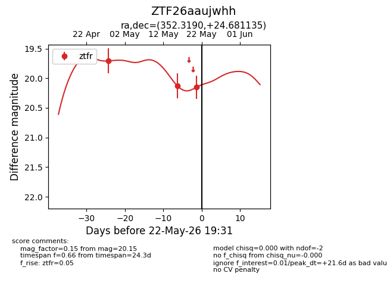
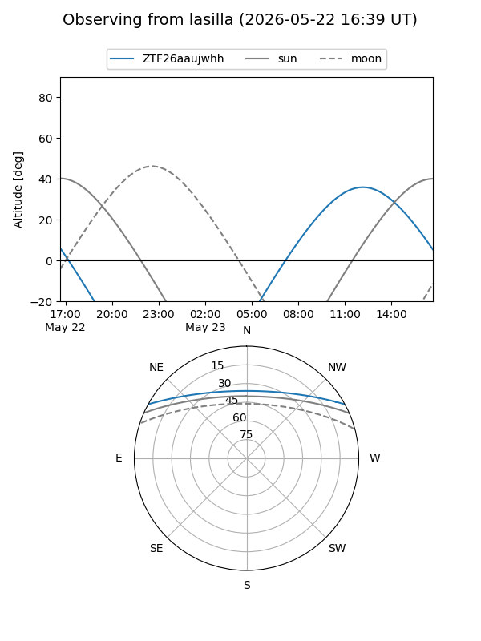
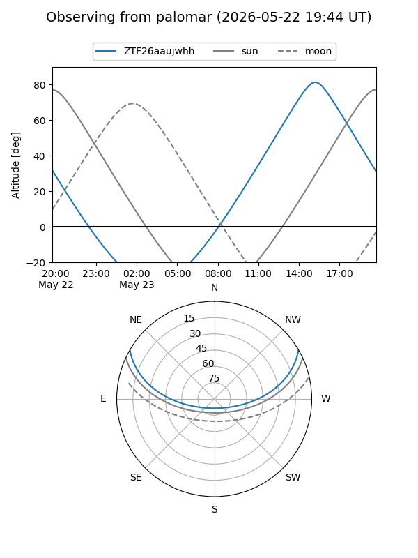
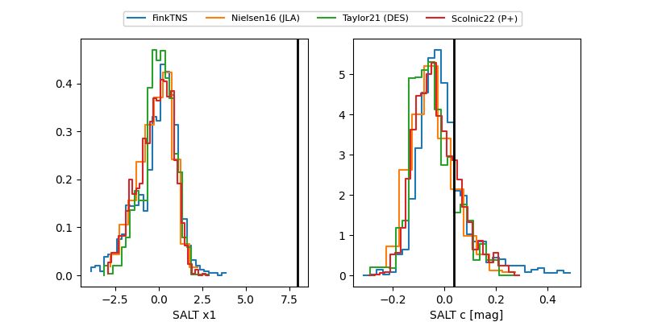

ZTF26aaujwhh
Target ZTF26aaujwhh at 2026-05-22 19:33
Aliases and brokers:
lsst-FINK: link
lsst-Lasair: link
lsst-ALeRCE: link
ztf-FINK: link
ztf-Lasair: link
ztf-ALeRCE: link
alt names
ZTF26aaujwhh (ztf,fink_ztf)
Coordinates:
equatorial (ra, dec) = 352.3190,+24.68114
equatorial (HMS+DMS) = 23:29:16.57,+24:40:52.09
galactic (l, b) = (100.1639,-34.53206)
Flags:
Photometry:
last ztfr=20.15
3 ztfr detections
Lightcurve

Visibility


Additional plots
